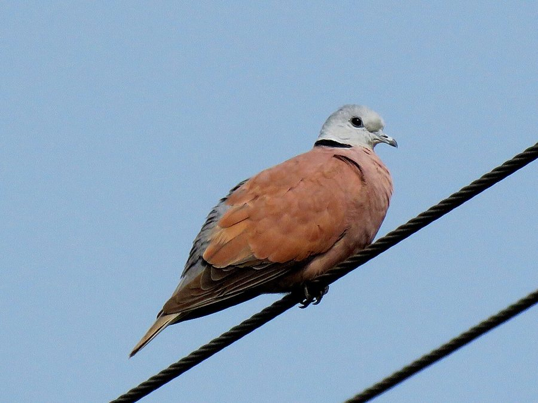

सिरोटी पंडुकRed Collared Dove
Streptopelia tranquebarica · Columbidae · BRD-0195

- Scientific name वैज्ञानिक नाम
- Streptopelia tranquebarica (Herrmann, 1804)
- Family कुल
- Columbidae
- Hindi हिंदी
- सिरोटी पंडुक
- Local names स्थानीय नाम
- siroti panduk, red collared dove, panduk
- Status here यहाँ की स्थिति
- native
- Movement आवागमन
- Resident, here all year
- Known from कहाँ दर्ज
- Others have published records from the Basti–Ayodhya districts बस्ती–अयोध्या के ज़िलों से दूसरों के प्रकाशित अभिलेख
- IUCN IUCN
- LC
- Review समीक्षा
- audited and independently read
When to look कब देखें
Present all year. साल भर मौजूद।
Tell it apart from इनसे अलग पहचानें
सिरोटी पंडुक / Red Collared Dove
Streptopelia tranquebarica (Herrmann, 1804) — Columbidae
सिरोटी पंडुक — यह छोटी, गहरे भूरे रंग की कबूतर पूरे साल पूर्वी उत्तर प्रदेश में गाँवों, खेतों और झाड़ीदार इलाकों में दिखती है। नर पक्षी का गहरा लाल रंग और सिर के पीछे काली पट्टी इसे तुरंत पहचान देती हैं। अपनी बार-बार दोहराई जाने वाली कूँ-कूँ-कूँ आवाज़ से यह आसानी से पहचानी जाती है।
Quick Identification त्वरित पहचान
| Feature | Description |
|---|---|
| Size | Small dove; 23–24 cm long |
| Male plumage | Deep brick-red above; blackish half-collar on nape; blue-grey on wings |
| Female plumage | Pale pink-buff above; less vivid; similar collar pattern |
| Underparts | Pale buff or whitish; reddish tones on breast |
| Eye-ring | Red-orange orbital ring (bare skin) |
| Behaviour | Feeds on ground; forages in pairs or small flocks; constant cooing |
| Flight | Swift and direct; displays white patches on tail in flight |
Field tip: A small, pale reddish dove that walks on the ground picking seeds. Males are distinctly dark reddish-brown with a blackish collar on the neck; females are paler buff. Often in pairs or small flocks near villages and fields. Constantly calls a three-note "coo-coo-coo" or "koo-koo-koo".
हिंदी — कैसे पहचानें:
छोटी कबूतर, गहरे रंग की।
नर का सिर और गर्दन लाल-भूरी।
गर्दन के पीछे काली पट्टी।
सड़क और खेतों पर दिखता है।
Morphology आकारिकी
Biometrics:
| Measurement | Range |
|---|---|
| Total length | 230–240 mm |
| Wing (flattened chord) | 140–160 mm |
| Tail | 90–105 mm |
| Bill | 15–18 mm |
| Tarsus | 18–22 mm |
Size: 23–24 cm long; weighs 100–130 g. A small, compact dove.
Plumage (male): Deep brick-red or maroon-brown above. Blackish half-collar or nape-patch (distinctive). Wing coverts blue-grey. Underparts cream-buff to pale pink. Lower breast and belly paler; undertail coverts cream.
Plumage (female): Paler overall; pale buff or pink-buff above instead of deep red. Similar nape collar but less distinct. Wing coverts grey-brown. Underparts pale buff.
Bill: Small, dark grey; slightly curved.
Eyes: Red-orange orbital ring (bare skin). Iris yellow-brown.
Legs and feet: Red; short and strong.
Sexes: Dimorphic. Males deeply coloured; females paler and buff.
Juveniles: Resemble females but duller, with subdued colours.
Vocalisations. Call repertoire:
- Coo: A distinctive, repetitive three-note call "coo-coo-coo" or "koo-koo-koo", similar to Red-eyed Dove but lower-pitched.
- Display coo: Soft, gurgling calls during courtship.
- Alarm: Quick wing clap and sudden flight.
हिंदी: "कू-कू-कू" की आवाज़ करता है। सारे दिन गाता रहता है।
Behaviour & Ecology व्यवहार और पारिस्थितिकी
Foraging: Feeds on the ground, walking and picking seeds. Gregarious; often in pairs or small flocks. Feeds on:
- Seeds of grasses and weeds
- Crop seeds (wheat, rice, millet)
- Cultivated grain and millet
- Occasionally leaf buds
Social behaviour: Resident and partly nomadic. Males are territorial during breeding season. Pairs keep together. Non-breeding birds gather in larger flocks. Roosts communally on trees and building ledges.
Nesting: Monogamous. Builds a fragile stick nest in trees, bushes, or on ledges of buildings.
Flight: Swift, direct flight; wings make characteristic whirring sound. Displays white tail patches in flight.
Daily routine: Feeds in early morning and late afternoon; rests during midday. Vocal throughout the day.
हिंदी: जोड़ों में रहता है। खेतों और रास्तों पर दाने खाता है। छतों पर बैठकर गाता है।
Life Cycle / Phenology जीवन चक्र
Breeding season: Prolonged; March–October in eastern UP, peak May–August.
Nest: Flimsy stick platform in tree, bush, or building ledge, usually 2–5 m high.
Clutch: 2 eggs; white.
Incubation: About 14 days; both parents incubate.
Fledging: Chicks fledge in 12–14 days; fed by regurgitation.
Broods: Multiple broods per year (2–3 in eastern UP).
Moult: Complete post-breeding moult; September–November.
Residents and nomads: Year-round, but numbers fluctuate with food availability.
हिंदी: गर्मी में घोंसला बनाता है। साल भर दिखता है।
Host Plants or Prey आहार
| Food Type | Examples | Feeding Behaviour | ||
|---|---|---|---|---|
| Grass seeds | Various annual and perennial grasses | Peck from ground | ||
| Crop seeds | [[wheat\ | Wheat]], rice, millet, [[chickpea\ | chickpea]] | Forage in stubble fields |
| Weed seeds | Various weeds of cultivation | Pick from ground and low vegetation | ||
| Leaves and buds | Young leaves, plant buds | Occasional; browse |
हिंदी: दाने खाती है। खेतों में दाने चुनती है।
Predators / Natural Enemies शत्रु
- Avian predators: Shrike species, small raptors, crows, magpies
- Mammalian predators: Snakes, cats, domestic dogs
- Nest predators: Snakes, corvids, house crows
- Parasites: Avian parasites, ticks, mites
हिंदी: चील और शिकारी चिड़ियाँ इसका शिकार करती हैं।
Agricultural / Human Relevance कृषि प्रासंगिकता
Protected status: Wildlife Protection Act 1972, Schedule IV (as member of Columbidae).
Agricultural interactions: Both beneficial and detrimental. Feeds on weed seeds (beneficial) but also on cultivated grain spilled during harvest and in fields (minor damage).
Cultural relevance: Common in village settlements; familiar to rural communities. Associated with cultivated landscapes and human habitation.
Historical use: Hunted for food historically; now protected.
Ecological role: Seed dispersal of weeds; food for raptors.
हिंदी: विधि अधिनियम 1972 के अंतर्गत संरक्षित है। गाँवों में साधारण है।
Expected Locally स्थानीय रूप से अपेक्षित
Not a field record. Written from published accounts for eastern Uttar Pradesh. No confirmed local sighting yet — if you have seen it, that is what the atlas needs.
अभी तक स्थानीय पुष्टि नहीं। यह विवरण प्रकाशित स्रोतों से है, किसी अवलोकन से नहीं।
This species is NOT a field record. The distribution below is based on published sources describing where Red Collared Dove should be looked for in the Basti–Ayodhya region.
Year-round presence: GBIF holds published records from Basti–Ayodhya and the wider Awadh–Purvanchal plain. Expected resident in open woodland, cultivation, and village settlements year-round. Most visible during breeding season (May–August) when vocal activity is high.
Where to look: Village streets, cultivation margins, waste ground with scattered trees, and open scrubland. Feeds on the ground in fields and roadsides.
Seasonality: Year-round; numbers increase during harvest season with availability of spilled grain.
Detection: Listen for the distinctive three-note cooing in early morning and late afternoon. Ground feeders; easily located in open habitats.
What a first record would be: A dated photograph or video showing the bird clearly (including male's distinctive red plumage and nape collar), with location GPS coordinates and date, submitted through the About page of this atlas.
हिंदी: गाँवों और खेतों में साल भर दिखता है। इसकी आवाज़ से आसानी से पहचाना जा सकता है।
Distribution वितरण
Global range: Indian subcontinent from the foothills to southern India; also western Asia (Turkey, Iran, Iraq).
In India: Widespread resident throughout the Indian peninsula, Himalayan foothills, and into the Deccan.
In Uttar Pradesh: Common resident throughout the state, particularly in cultivation and village areas.
In Basti district / eastern UP: Common resident; found in all suitable habitat types (cultivation, scrubland, villages).
Research Questions शोध प्रश्न
- What is the temporal and spatial variation in Red Collared Dove population density across different habitats in eastern UP?
- How do agricultural practices (harvest methods, crop choice, stubble management) affect food availability and dove abundance?
- Do breeding populations show differences in clutch frequency and breeding success based on food availability?
- पूर्वी उत्तर प्रदेश में इस कबूतर की कॉल की विविधता अलग-अलग क्षेत्रों में क्या है?
- How do non-breeding flocks form and disperse in relation to food and water availability? (A child can track a flock over days and note their movement patterns.)
- क्या इस कबूतर की संख्या सर्दी और गर्मी में बदलती है, और क्यों?
Similar Species मिलती-जुलती प्रजातियाँ
| Species | Key Difference | Hindi | Field Rule | |
|---|---|---|---|---|
| [[spotted_dove\ | Spotted Dove]] (Streptopelia chinensis) | Larger; spotted wing coverts (no half-collar); grey head with black nape spots | फाख्ता | Spotted Dove is larger, with a differently patterned nape. Red Collared is smaller and has a simple black half-collar. |
| [[eurasian_collared_dove\ | Eurasian Collared Dove]] (Streptopelia decaocto) | Larger; pale pink-buff; full black collar encircling neck | विदेशी कबूतर | Eurasian is much larger and paler, with a complete neck ring. Red Collared is smaller and darker. |
| [[laughing_dove\ | Laughing Dove]] (Spilopelia senegalensis) | Smaller; more buff overall; lacks the reddish coloration | हँसिया कबूतर | Laughing Dove is smaller, more buff, and lacks the deep red colouring. |
Field rule: A small, dark reddish-brown dove with a distinctive black nape collar (males) or blackish nape patch. Males are significantly darker than females. Unique three-note cooing call. Found on ground in cultivated fields and villages.
Taxonomy & Classification वर्गीकरण
Original description. Described by Herrmann in 1804. Columba tranquebarica Herrmann, 1804. Type locality: Tranquebar, south India.
Subspecies. Monotypic (single subspecies): S. tranquebarica (Herrmann, 1804).
Family and order placement. Order Columbiformes; family Columbidae (pigeons and doves). Genus Streptopelia comprises Old World doves with distinctive cooing calls.
Phylogenetic notes. Streptopelia tranquebarica is closely related to other Streptopelia species, particularly the Spotted Dove (S. chinensis) with which it was long considered conspecific in some older references.
IUCN status rationale. Assessed as Least Concern (LC) globally. Population is stable and widespread across its range in India and Asia. Not threatened by exploitation; well-adapted to human-modified landscapes. Protected under the Wildlife Protection Act 1972.
हिंदी: भारत का साधारण पक्षी है। कानून से पूरी तरह सुरक्षित है।
Photo Gallery फोटो गैलरी
No photos yet — add field photos to media/species/red_collared_dove/ and run node scripts/sync_photos.js.
Wanted photos:
- Male showing red coloration and black nape collar
- Female for comparison with paler colouration
- Feeding behaviour on ground
- Pair during breeding season
- In flight showing white tail patches
- Roosting on building ledge or tree
References संदर्भ
- Herrmann, J. F. W. (1804). Observations on birds observed in India. Magasin Enzyklopädisch 6: 145.
- Ali, S. & Ripley, S. D. (1969). Handbook of the Birds of India and Pakistan. Vol. 4 (Gannets to Herons). Oxford University Press, Delhi. Pp. 288–290.
- Grimmett, R., Inskipp, C. & Inskipp, T. (2011). Birds of the Indian Subcontinent (2nd edn). Oxford University Press, Delhi. P. 152.
- Praveen, J., Jayapal, R. & Pittie, A. (2016). A checklist of the birds of India. Indian Birds 11 (5–6): 113–172.
- GBIF Occurrence Data — Streptopelia tranquebarica, India.
- IUCN Red List (2023). Streptopelia tranquebarica — BirdLife International assessment. IUCN, Cambridge. Status: Least Concern.
Source file: species/fauna/birds/red_collared_dove.md